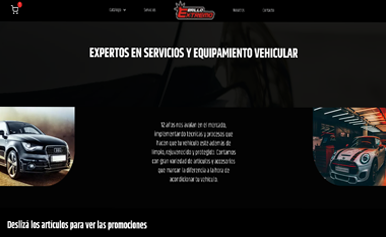

<section class="w-full lg:py-44">
  <div class="max-w-screen-xl mx-auto">
    <h2 class="text-3xl md:text-6xl font-bold text-center text-[#f2e8e2] mb-10">Proyectos realizados</h2>
    <div class="grid grid-cols-1 sm:grid-cols-2 lg:grid-cols-3 gap-4 px-4">
      <article class="p-2 rounded-lg transition text-center hover:-translate-y-1 hover:scale-105 duration-300">
        <div class="p-2 rounded-lg transition text-start hover:-translate-y-1 hover:scale-105 duration-300">
          <a href="https://stable.com.ar" target="_blank" class="flex justify-center relative">
            
            
          </a>
          <button (click)="toggleTextStable()" class="mt-2 px-4 py-2 bg-[#6f859b] text-white rounded hover:bg-[#5b7a99] flex items-center justify-center gap-2">
            {{ showTextStable ? 'Ocultar detalles' : 'Ver detalles' }}
            <svg xmlns="http://www.w3.org/2000/svg" width="24" height="24" viewBox="0 0 24 24">
              <path fill="none" stroke="currentColor" stroke-linecap="round" stroke-linejoin="round" stroke-width="1.5" d="m4 8.417l6.587 6.587a2.013 2.013 0 0 0 2.826 0L20 8.417"/>
            </svg>
          </button>
          <p *ngIf="showTextStable" class="text-white pt-2 text-start">
            En este proyecto desarrolle frontend utilizando Angular 16, Tailwind CSS, y TypeScript. También maqueté el diseño, redacté los textos y creé imágenes para los banners.
          </p>
        </div>
      </article>

      <article class="p-2 rounded-lg transition text-center hover:-translate-y-1 hover:scale-105 duration-300">
        <div class="p-2 rounded-lg transition text-center hover:-translate-y-1 hover:scale-105 duration-300">
          <a href="https://www.brilloextremovm.com" target="_blank" class="flex justify-center relative">
            
            
          </a>
          <button (click)="toggleTextBrillo()" class="mt-2 px-4 py-2 bg-[#6f859b] text-white rounded hover:bg-[#5b7a99] flex items-center justify-center gap-2">
            {{ showTextBrillo ? 'Ocultar detalles' : 'Ver detalles' }}
            <svg xmlns="http://www.w3.org/2000/svg" width="24" height="24" viewBox="0 0 24 24">
              <path fill="none" stroke="currentColor" stroke-linecap="round" stroke-linejoin="round" stroke-width="1.5" d="m4 8.417l6.587 6.587a2.013 2.013 0 0 0 2.826 0L20 8.417"/>
            </svg>
          </button>
          <p *ngIf="showTextBrillo" class="text-white pt-2 text-start">
            En este proyecto desarrollé frontend creando un carrito de compras con microservicios utilizando Angular 16, Tailwind CSS, y TypeScript. Implementación y trabajo en conjunto con el backend para consumir y enviar datos. También implementé y mejoré SEO, performance, y accesibilidad.
          </p>
        </div>
      </article>

      <article class="p-2 rounded-lg transition text-center hover:-translate-y-1 hover:scale-105 duration-300">
        <div class="p-2 rounded-lg transition text-center hover:-translate-y-1 hover:scale-105 duration-300">
          <a href="https://fronttuttobene.web.app" target="_blank" class="flex justify-center relative">
            
            
          </a>
          <button (click)="toggleTextTutto()" class="mt-2 px-4 py-2 bg-[#6f859b] text-white rounded hover:bg-[#5b7a99] flex items-center justify-center gap-2 ">
            {{ showTextTutto ? 'Ocultar detalles' : 'Ver detalles' }}
            <svg xmlns="http://www.w3.org/2000/svg" width="24" height="24" viewBox="0 0 24 24">
              <path fill="none" stroke="currentColor" stroke-linecap="round" stroke-linejoin="round" stroke-width="1.5" d="m4 8.417l6.587 6.587a2.013 2.013 0 0 0 2.826 0L20 8.417"/>
            </svg>
          </button>
          <p *ngIf="showTextTutto" class="text-white pt-2 text-start">
            En este proyecto desarrolle frontend con Angular 16, Tailwind CSS, y TypeScript, creando un carrito de compras con distintas variaciones. También desarrollé alertas utilizando microservicios e implementé socket para el cambio de estados en los pedidos. Implementación y trabajo en conjunto con el backend para consumir y enviar datos. También implementé y mejoré SEO, performance, y accesibilidad.
          </p>
        </div>
      </article>
    </div>
  </div>
</section>
